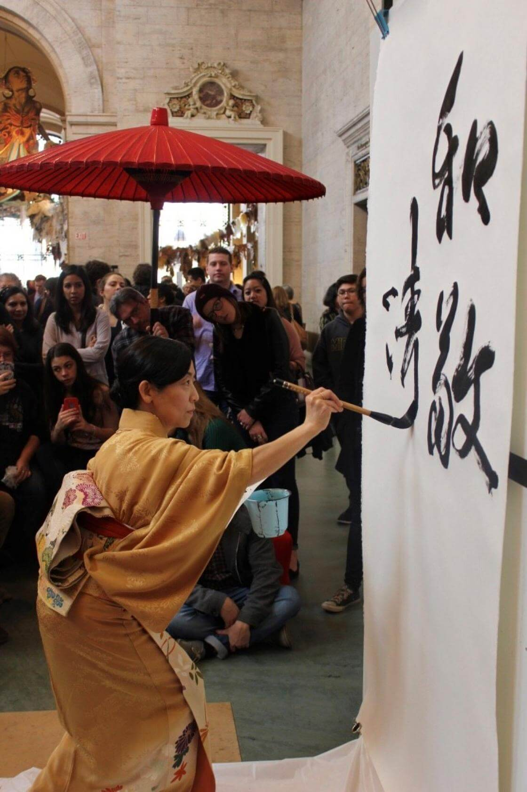
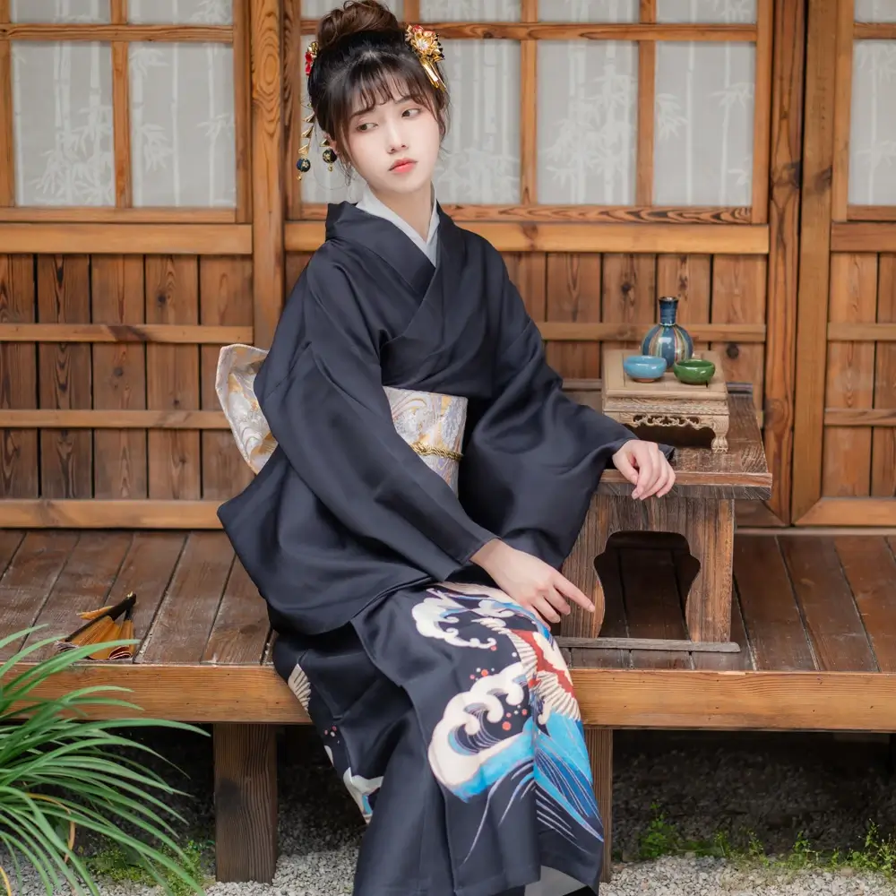
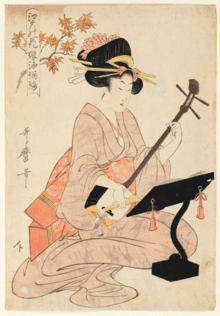

La Cultura Giapponese
La cultura giapponese ha subìto grandi cambiamenti nel corso dei secoli, dalla cultura originaria del Paese, detta Jōmon (縄文時代 Jōmon-jidai), alla cultura moderna, un'ibrida combinazione di influenze asiatiche, europee e nordamericane. Dopo numerose ondate di immigrazioni dal continente e dalle vicine isole del Pacifico, seguite dall'enorme importazione di cultura dalla Cina, gli abitanti del Giappone attraversarono un lungo periodo di relativo isolamento dal mondo esterno sotto lo shogunato Tokugawa, fino all'arrivo delle "Navi Nere" e all'inizio del periodo Edo. Questo diede come risultato una cultura diversa da qualsiasi altra cultura orientale, cosa che si riscontra ancora oggi nel Giappone contemporaneo.
Linguaggio

La lingua giapponese ha da sempre giocato un ruolo significante nella cultura giapponese.
Nemawashi, ad esempio, indica il consenso ottenuto grazie a un'attenta preparazione. Riflette
quell'armonia che è desiderata e rispettata all'interno della cultura giapponese. Nonostante i
giapponesi siano meglio conosciuti all'estero per la loro comicità tipicamente gestuale, sono
dotati di un complesso senso dell'umorismo. Poiché questo umorismo è fondato su lingua, cultura,
religione ed etica giapponesi, è generalmente considerato molto difficile da tradurre.
Il giapponese (日本語 Nihongo) è la lingua parlata in Giappone e in numerose aree di immigrazione
giapponese. Insieme alle lingue ryūkyūane, forma la famiglia delle lingue nipponiche.
Al 2022, è parlata da 125,4 milioni di parlanti totali.
Poco si conosce della preistoria della lingua, o di quando essa apparve per la prima volta in
Giappone: i documenti cinesi del III secolo, registravano alcune parole giapponesi ma testi
sostanziali non apparvero prima dell'VIII secolo. Durante il periodo Heian (794-1185), il cinese
ebbe considerevole influenza sul vocabolario e sulla fonologia del giapponese antico. Il
giapponese tardomedio (1185-1600) vide cambiamenti nelle caratteristiche che lo portarono più
vicino alla lingua moderna, nonché la prima apparizione di prestiti linguistici europei; il
dialetto standard si spostò dalla regione di Kansai alla regione di Edo (la moderna Tokyo) nel
periodo del Primo giapponese medio (inizio del XVII secolo-metà del XIX secolo). In seguito,
alla fine dell'isolamento autoimposto del Giappone, il flusso dei prestiti linguistici dalle
lingue europee aumentò significativamente: i prestiti linguistici inglesi, in particolare, sono
diventati frequenti e le parole giapponesi con radici inglesi sono proliferate.
Dal punto di vista filogenetico, il giapponese si considera solitamente una lingua isolata (per
l'impossibilità di ricostruire con sicurezza la sua origine); alcune delle teorie proposte
ipotizzano che il giapponese possa avere origini comuni con la lingua ainu (parlata dalla
popolazione indigena Ainu, tuttora, presente nell'isola di Hokkaidō), con le lingue
austronesiane oppure con le lingue altaiche. Le ultime due ipotesi sono attualmente le più
accreditate: molti linguisti concordano nel ritenere che il giapponese sarebbe costituito da un
substrato austronesiano a cui si è sovrapposto un apporto di origine altaica; evidenti sono le
somiglianze sintattiche e morfologiche con il coreano, trattandosi di lingue agglutinanti (che
formerebbe con il giapponese il gruppo macro-tunguso), da cui differisce sul piano lessicale.
Vari studiosi utilizzano il termine protogiapponese per indicare la protolingua di tutte le
varietà delle lingue moderne del Giappone, ovvero la lingua moderna giapponese, i dialetti del
Giappone e tutte le forme di lingua parlata nelle isole Ryukyu[4]. Dal punto di vista
tipologico, il giapponese presenta molti caratteri propri delle lingue agglutinanti del tipo
SOV, con una struttura "tema-commento" (simile a quella del coreano). La presenza di alcuni
elementi tipici delle lingue flessive, ha spinto tuttavia alcuni linguisti a definire il
giapponese una lingua "semi-agglutinante".
Arte
Pittura
La pittura è un'arte presente in Giappone da lungo tempo. Il pennello è lo strumento usato tradizionalmente per scrivere e il conseguente uso dello stesso come strumento degli artisti fu probabilmente un'evoluzione naturale. Le tecniche della pittura tradizionale giapponese sono tuttora usate in Giappone, così come le tecniche adottate dalla vicina Asia e dall'Occidente.
Calligrafia
La lingua giapponese scritta è tradizionalmente una calligrafia complicata eseguita con un pennello. Come in altri Paesi asiatici, l'interpretazione stessa del testo viene vista come un'arte a sé, così come il significato delle informazioni scritte. L'arte consiste di frasi, poesie, storie o anche solo kanji (漢字 kanji, letteralmente "caratteri han", cioè "caratteri cinesi" o "sinogrammi"). Lo stile e il formato della scrittura possono parodiare l'argomento trattato, così come la velocità delle pennellate e la struttura delle stesse. La calligrafia viene considerata un'arte al pari della pittura e spesso si può arrivare a ripetere un singolo carattere centinaia di volte per ottenere l'effetto desiderato. L'arte della calligrafia è solitamente incomprensibile per la maggior parte degli occidentali. Un'altra forma d'arte associata alla calligrafia e conosciuta come sumi-e (墨絵 sumi-e), consiste nel comporre opere eseguendole con dell'inchiostro creato dall'artista stesso, strofinando un blocco di inchiostro solido su una speciale pietra e mischiandolo con acqua.
Ukiyo-e
L'ukiyo-e (浮世絵 ukiyo-e, letteralmente "immagini del mondo fluttuante") è un genere di stampa che usa blocchi di legno, esemplare dell'arte del periodo Tokugawa. Il fatto che queste stampe potessero essere prodotte in serie le rese disponibili a un'ampia fetta della popolazione giapponese durante i secoli XVII e XX, specialmente quella parte che non si poteva permettere i dipinti originali. La grande popolarità degli ukiyo-e ne fece un'arte riconosciuta tra quelle tradizionali giapponesi, con conseguente influenza negli stili dei moderni spot pubblicitari, cartelloni e altre arti.
Scultura
Le tecniche della scultura giapponese subirono l'influenza dalle tradizioni buddiste e shintoiste. Lacca, decorazioni in oro e colori accesi sono le tecniche tradizionali più comuni. Tra i materiali più in uso vi furono il legno, il bronzo, la pietra e la ceramica.
Ikebana
Ikebana (生け花? ikebana, letteralmente "fiori viventi") è un termine giapponese che si riferisce all'arte di disporre i fiori. Ha avuto grande successo internazionale per la sua essenza incentrata nell'armonia, nel colore e nel ritmo, nonché nell'eleganza della sua semplicità. L'ikebana è ampiamente praticata ogni giorno in Giappone, così come nel resto del mondo.
Cha no yū
Cha no yū (茶の湯 cha no yū, letteralmente "acqua calda per il tè") è la cosiddetta cerimonia del tè giapponese. Essa trova le sue radici nello zen ed è considerata una delle arti tradizionali del Giappone.
Shibari
Lo shibari (縛り shibari) è un'arte giapponese che adotta l'hojōjutsu (捕縄術 hojōjutsu), ovvero l'atto di legare una persona. Esso può avere diversi fini, tra i quali il rilassamento del corpo e della mente, una forma artistica di scultura vivente o una pratica sessuale BDSM.
La religione
Il Giappone gode di una piena libertà religiosa ai sensi dell'articolo 20 della sua Costituzione. Secondo una ricerca del 2011 il 22% della popolazione giapponese segue la religione buddista. Secondo un'altra ricerca del 2008 si definiva buddista il 34% dei Giapponesi. Tra il 49% e il 67%, la popolazione giapponese non riferisce una affiliazione a una religione organizzata. Di fatto, la grande maggioranza della popolazione è legata a locali santuari e culti shintoisti e una larga fetta pratica un sincretismo di shintoismo e buddismo. Tra le minoranze religiose vi sono l'islam, l'induismo, l'ebraismo, il cristianesimo (il quale viene praticato da meno dell'1% della popolazione giapponese). Infine, a partire dalla metà del XIX secolo, numerosi nuovi movimenti religiosi sono emersi in Giappone.
Abbigliamento
{kind=link}
Il termine giapponese kimono (着物 kimono, letteralmente "cosa da indossare") indica il noto capo di abbigliamento tradizionale giapponese. Originariamente il termine kimono veniva usato per tutti i tipi di vestiti, fino a indicare successivamente solo il tipico capo detto anche naga-gi (ナガー着 letteralmente "abito lungo"), che ancora oggi viene indossato nelle occasioni speciali da donne, uomini e bambini. È anche conosciuto come wafuku (和服 wakafu, letteralmente "abito giapponese"). I kimono si presentano in vari colori, stili e taglie. Gli uomini indossano generalmente colori più scuri, mentre le donne tendono a indossare colori più vivaci o pastello, spesso decorati con complicati disegni astratti o floreali. I kimono estivi sono più leggeri e vengono chiamati yukata (浴衣 yukata), i quali spesso arrivano solo fino alle ginocchia. I kimono più formali vengono generalmente indossati in numerosi strati, il cui numero, stile, lunghezza delle maniche e scelta del modello vengono determinati da stato sociale e occasione in cui il kimono stesso viene indossato.
Musica Giapponese
Come nella cultura, la musica giapponese è stata molto influenzata nel tempo; la musica d'arte ha molti stili differenti, ciascuno dei quali è stato creato separatamente nei differenti periodi storici del Giappone. I giapponesi hanno mantenuto quegli stili venerati nel tempo, modificandoli a mano a mano che il tempo passava. In generale nella storia della musica giapponese la musica vocale ha sempre giocato un ruolo più importante di quello della musica strumentale. Il panorama musicale popular del Giappone moderno comprende una larga schiera di cantanti, i cui interessi variano dal rock giapponese alla salsa giapponese, dal tango giapponese al country giapponese. Il karaoke, la ben nota forma di spettacolo dilettantistico di canto su di una base musicale che si svolge nei bar e nelle piccole discoteche, trova la sua origine proprio in Giappone. La musica giapponese, come quella dell'oriente in generale, è basata su di una scala pentafonica e da molta importanza alle componenti rumoristiche.